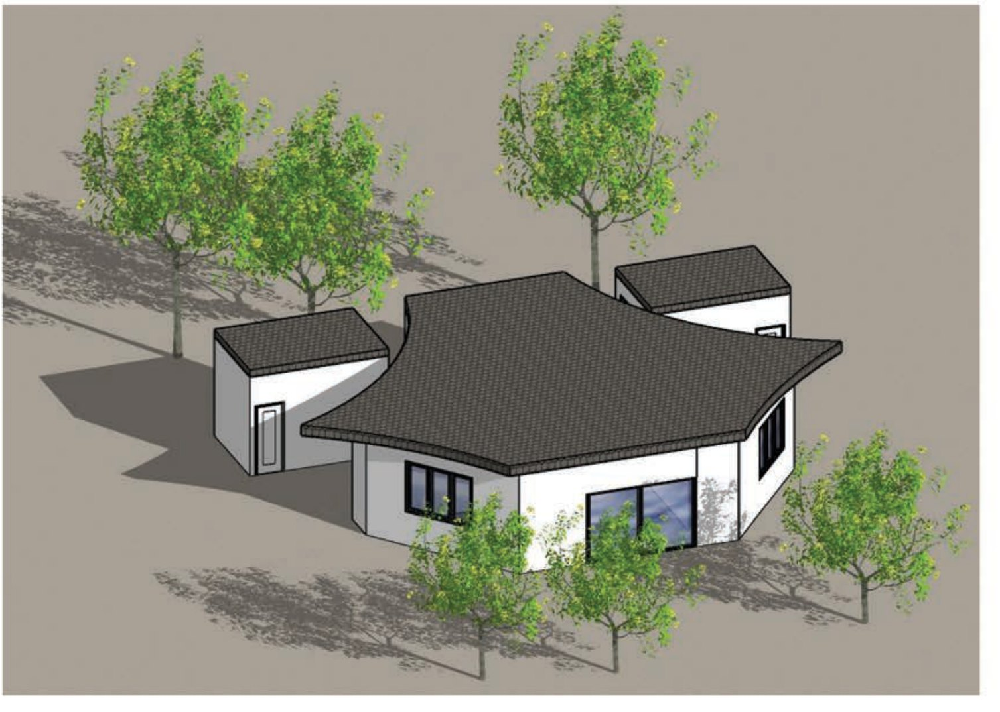
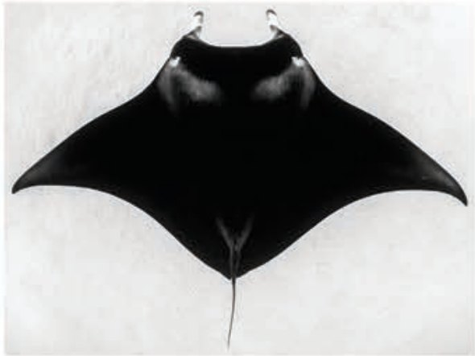
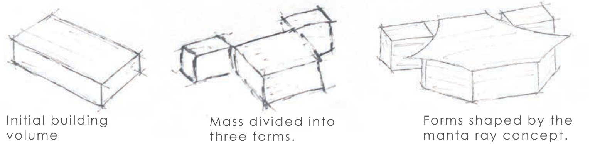
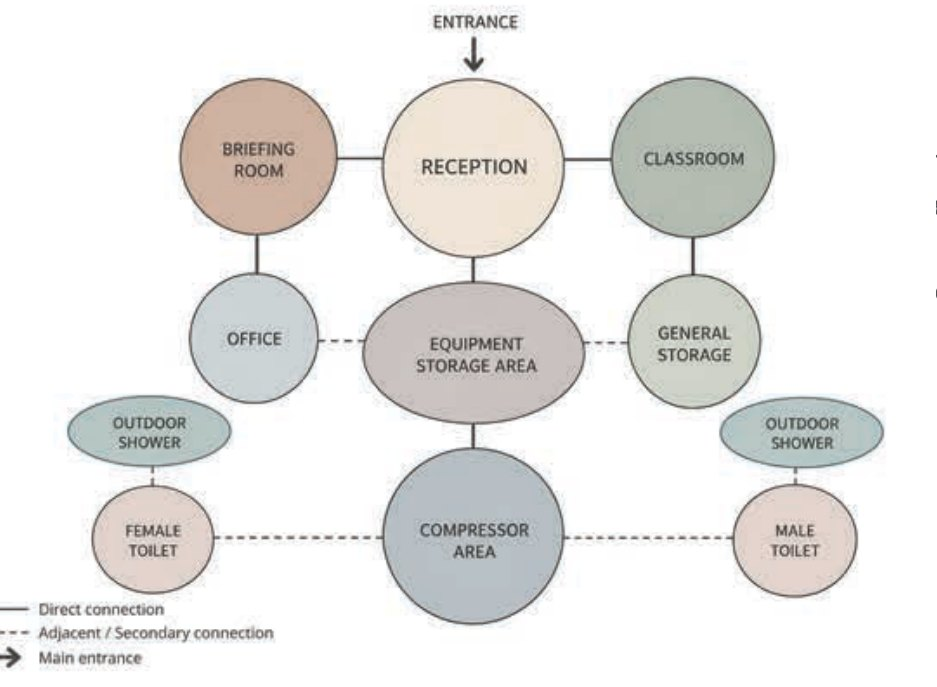
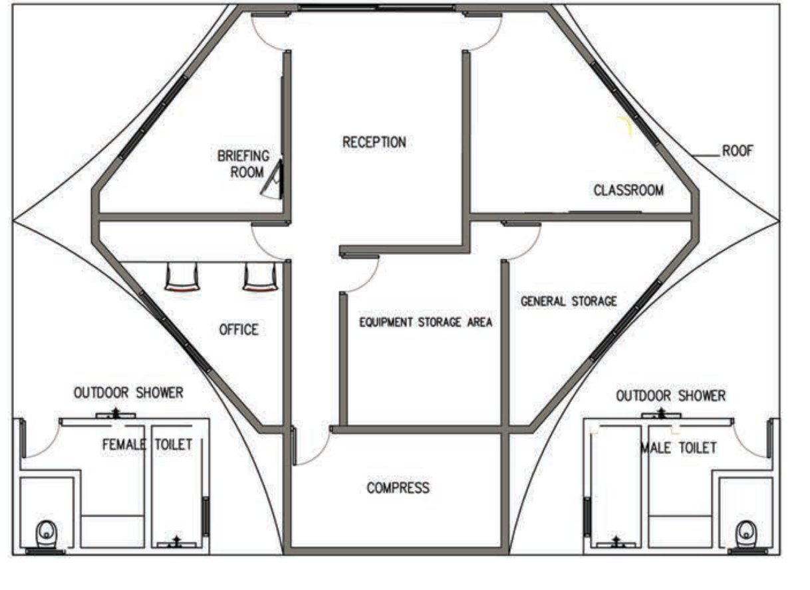
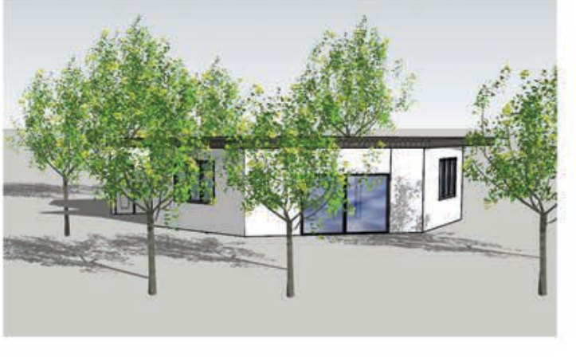
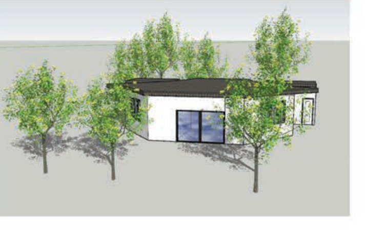

Reef Ray
Dive Center
Vilimalé, Maldives
Reef Ray Dive Center is a small diving facility designed to support the functional needs of divers while creating a strong connection to its coastal setting. The design takes inspiration from the form of a manta ray, influencing the overall building form and roof.
Explore project
ConceptDevelopment
From marine form to architecture
The concept explores the form of the manta ray as a starting point for the architecture. Its broad shape and curved profile influenced the development of the building, particularly the roof, creating a form that connects the dive center to its marine setting.

A broad, flowing form and curved edges, reflecting the graceful movement found in the marine environment.

Basic mass
Initial building volume.
Mass division
Mass divided into three forms.
Form development
Forms shaped by the manta ray concept.
DesignProcess
Planning around the diver’s sequence
Spatial planning developed around the functional sequence of divers, while the manta-inspired form shaped the overall building geometry.

Arrival leads to reception, which connects the briefing room, classroom and the central equipment storage. Outdoor showers, toilets and the compressor area form the operational edge.

Reception, briefing and classroom set up the front of the facility. Equipment and general storage sit at the centre, while the compressor, toilets and outdoor showers wrap the back beneath the sweeping roof.
FinalDesign
Final views
The sweeping, manta-inspired roof becomes the dominant gesture, while the smaller supporting volumes keep the dive center compact and practical within its green coastal setting.

